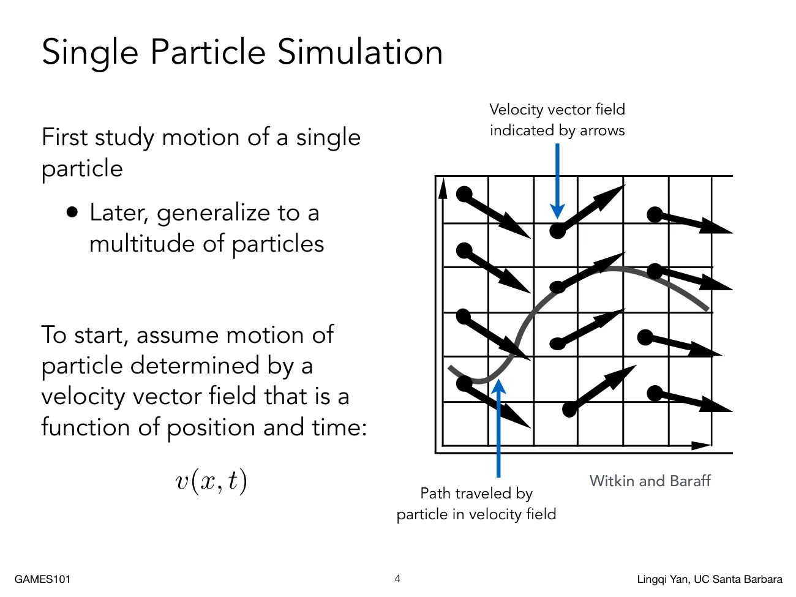
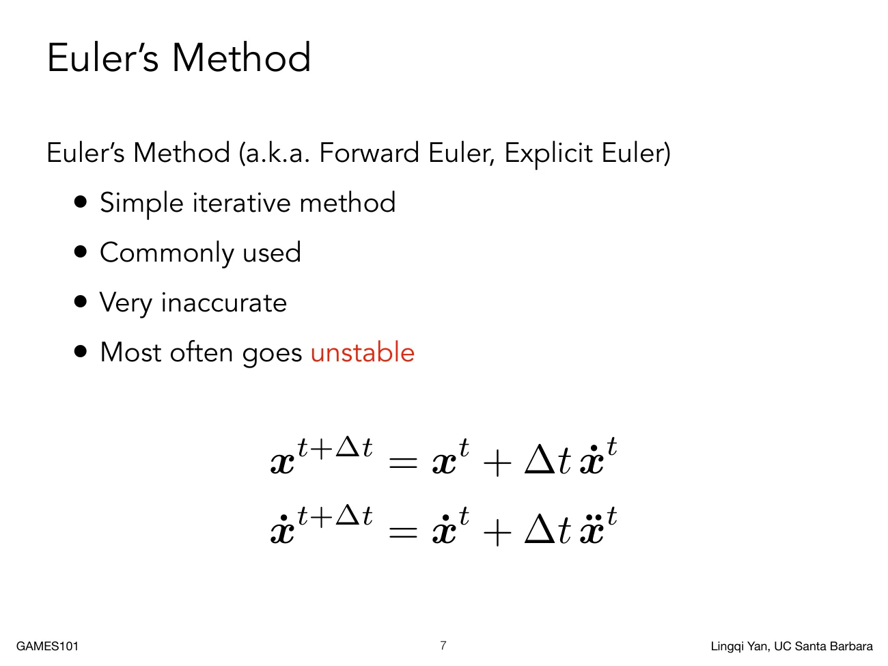
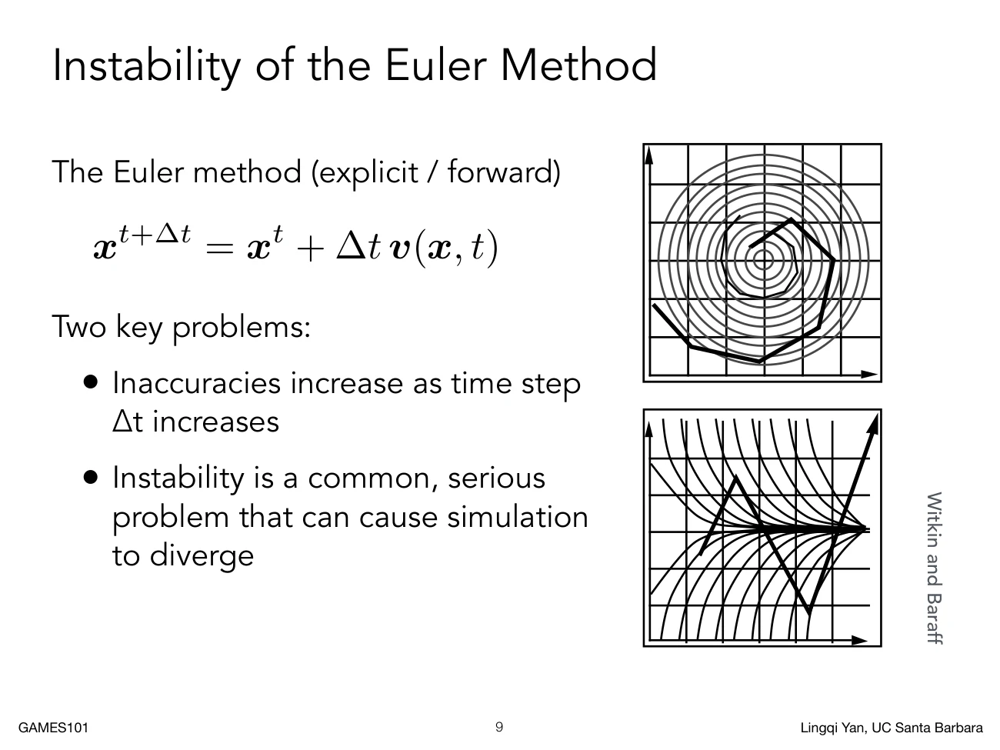
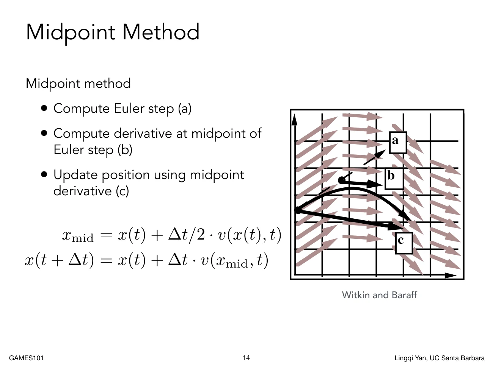
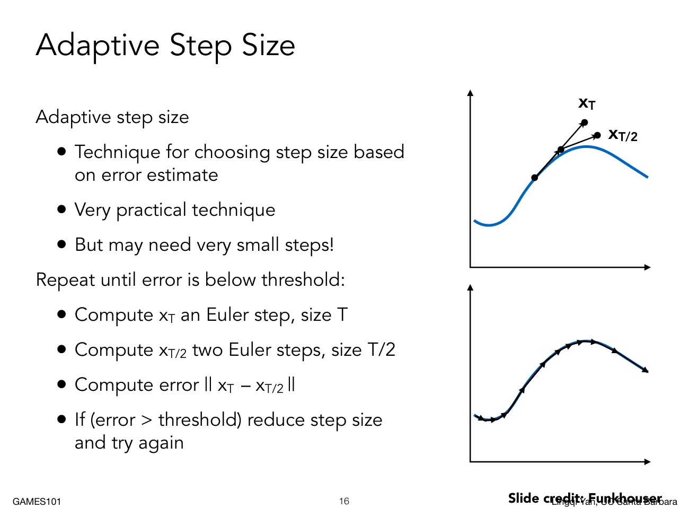
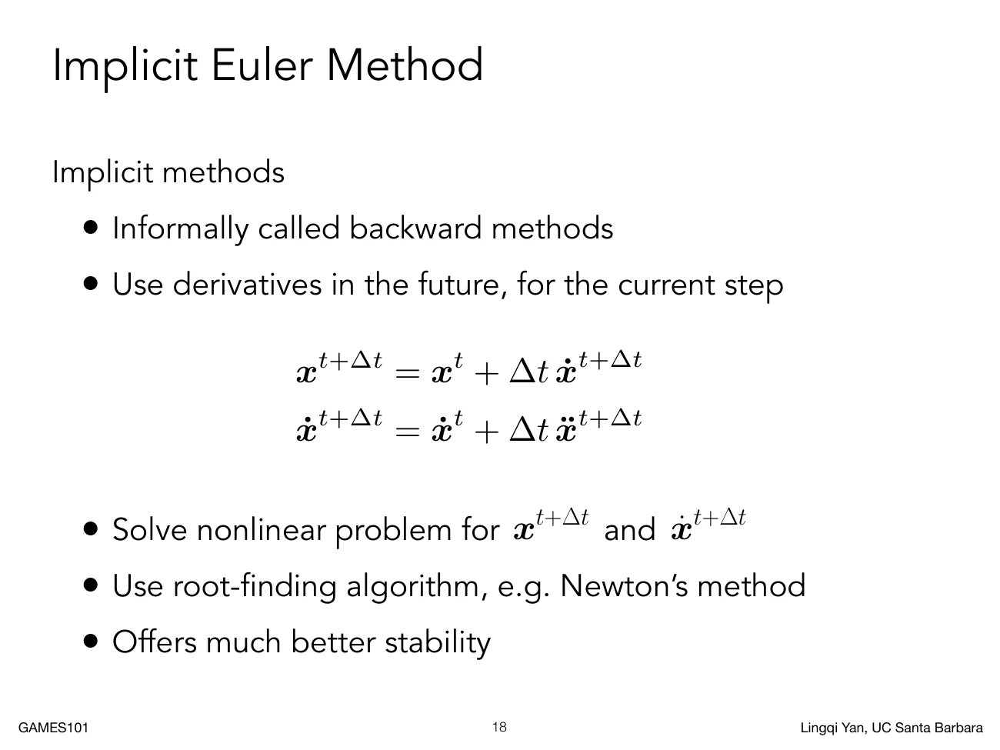
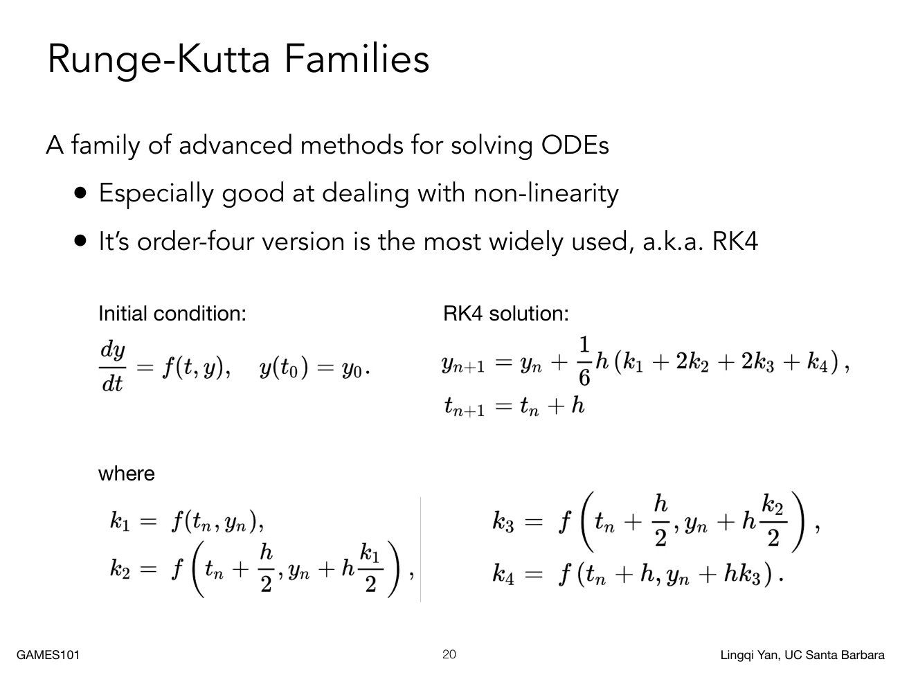
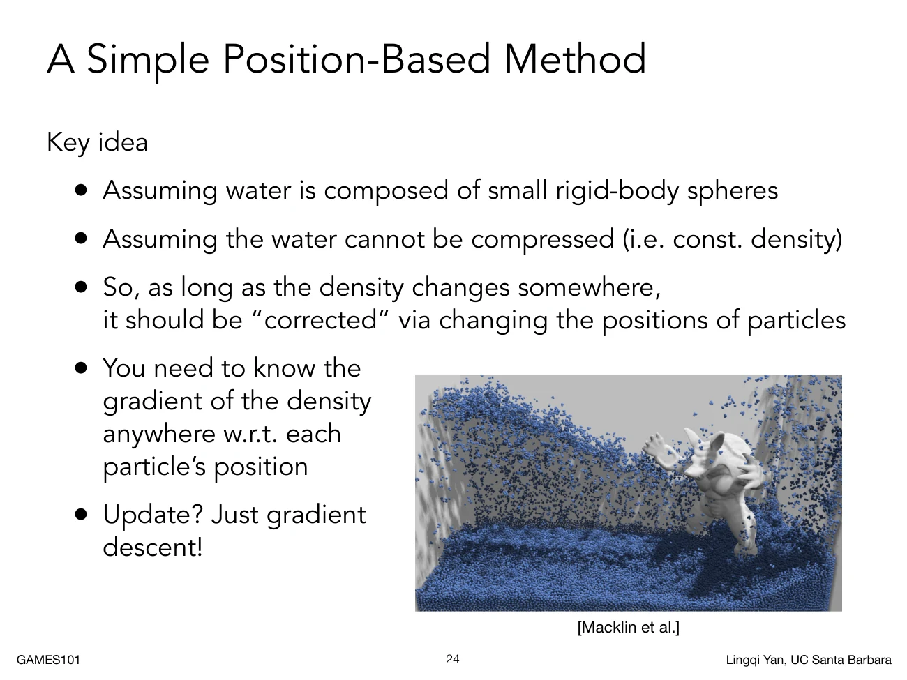
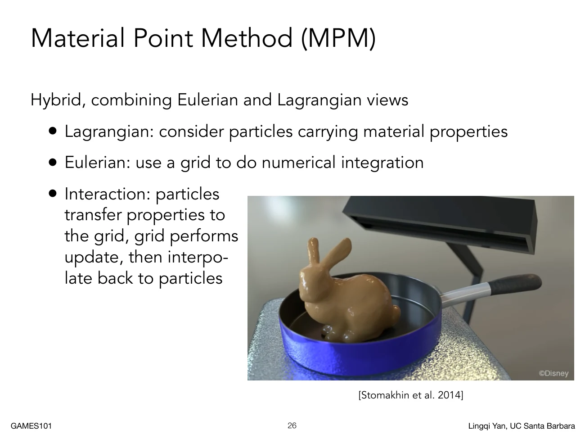

第 22 讲：动画（续）——单粒子模拟与流体初步
用数值积分推进粒子运动，理解欧拉法的误差与不稳定，并初步认识刚体与流体的模拟思路
◆ 学完这一讲，你应该能
能写出单粒子在速度场中运动的一阶常微分方程，并用显式欧拉法迭代求解位置
能解释显式欧拉法误差累积与不稳定的原因，并说出至少三种改进方法的核心思想
能区分中点法、改进欧拉法、自适应步长、隐式欧拉法、Verlet 积分各自的做法与优缺点
能说明刚体模拟相比粒子模拟多了哪些属性，以及流体模拟的两种视角（拉格朗日/欧拉）与 MPM 混合方法的基本流程
核心结论速记
单粒子运动由速度场 v(x,t) 决定，位置对时间的一阶常微分方程 dx/dt = v(x,t) 可用前向数值积分逐步推进。
显式（前向）欧拉法最简单也最不稳定：步长越大误差越大，误差会累积甚至导致模拟发散。
中点法用半步处的速度更新位置；改进欧拉法用起点和终点速度的平均；两者都比显式欧拉更准。
自适应步长通过比较一大步与两小步的结果来估计误差，误差超阈值就减小步长重算，实用但可能被迫用极小步长。
隐式欧拉法用下一时刻的速度/导数，需要解非线性方程（如牛顿法），稳定性好得多，局部截断误差 O(h²)、全局 O(h)。
Verlet/基于位置的积分在每步后直接约束粒子位置，简单快速但非物理、会耗散能量。
刚体模拟类似粒子模拟，只是每个刚体多了朝向、角速度、转动惯量等属性。
流体可用拉格朗日（质点）或欧拉（网格）视角模拟；MPM 把粒子携带物性与网格数值积分结合起来。
011. 从单个粒子开始：速度场与一阶常微分方程
模拟一大群粒子之前，先看一个粒子怎么动。课件假设空间中存在一个速度场（velocity vector field），它是位置和时间的函数：
\[ \mathbf{v} = \mathbf{v}(\mathbf{x}, t) \]
想象一条河，每个位置的水流方向和快慢都不同，粒子只是“随波逐流”。粒子在速度场中走出的轨迹，就是我们要算的东西。
粒子位置随时间的变化率等于它所在位置的速度：
\[ \frac{d\mathbf{x}}{dt} = \dot{\mathbf{x}} = \mathbf{v}(\mathbf{x}, t) \]
这是一个一阶常微分方程（ODE, Ordinary Differential Equation）。“一阶”指只出现一阶导数；“常”指 x 只是 t 的函数，没有对空间求偏导。
给定初始位置 \(\mathbf{x}_0\)，我们想求之后每个时刻的位置。解析解通常求不出来，于是用前向数值积分（forward numerical integration）：从已知的起点出发，一小步一小步往前推。这一讲后面所有方法，都是“怎么迈这一步”的不同答案。

常见坑
把速度场当成“力场”：这里 v 直接是速度，不是加速度；若给的是力，要先除以质量得到加速度再积分。
忘记初始条件：ODE 没有初始位置就没有唯一解，数值积分必须从给定的 x₀ 出发。
UE / Unity 落地
UE 的 Niagara 中，粒子速度常由 Vector Field 资产或速度模块给出，概念上就是这里的 v(x,t)。
Unity 的 VFX Graph 里用 Velocity 端口或 Vector Field 力场驱动粒子，同样对应速度场。
022. 显式欧拉法：最简单，也最容易翻车
欧拉法（Euler's method），也叫前向欧拉法（Forward Euler）或显式欧拉法（Explicit Euler），做法极其直接：用当前时刻的速度乘以时间步长，加到当前位置上。
\[ \mathbf{x}_{t+\Delta t} = \mathbf{x}_t + \Delta t \, \dot{\mathbf{x}}_t \]
如果还需要更新速度（例如有加速度），同理：
\[ \dot{\mathbf{x}}_{t+\Delta t} = \dot{\mathbf{x}}_t + \Delta t \, \ddot{\mathbf{x}}_t \]
它简单、常用，但课件给了两个刺眼的评价：非常不准确、经常不稳定。
原因在于它用区间起点的速度代表整个 \(\Delta t\) 区间的平均速度。速度场变化剧烈时，这一步的方向很快就过时了。更糟的是误差会累积：每一步都偏一点，下一步从偏掉的位置继续算，偏差越滚越大。步长 \(\Delta t\) 越大，偏差越明显；步长大到一定程度，模拟会直接发散（diverge）——数值解飞向无穷，而真实系统明明是有界的。
课件强调：在图形学里，精度不够有时可以忍（画面看不出），但不稳定是根本问题，必须处理。后面几种方法就是围绕“更准”和“更稳”展开的。


常见坑
步长过大 → 模拟爆炸/粒子飞出屏幕 → 先减小 Δt 或改用隐式/自适应方法，而不是盲目调大阻尼。
把“误差”和“不稳定”混为一谈：误差是每步偏一点，不稳定是偏差被放大到发散；前者影响画质，后者直接让模拟崩掉。
UE / Unity 落地
UE/Unity 的物理步长（Fixed Timestep）就是这里的 Δt；固定步长过大时布娃娃或破碎效果会抖动甚至爆炸。
Unity 的 Project Settings > Time > Fixed Timestep 调小可缓解不稳定，但会增加 CPU 开销。
显式欧拉法推进一个粒子（cpp）
// 显式欧拉：用当前速度更新位置
vec3 x = x0;
float t = 0.0f;
const float dt = 0.01f;
for (int step = 0; step < N; ++step) {
vec3 v = velocityField(x, t); // v(x, t)
x = x + dt * v; // x_{t+dt} = x_t + dt * v
t += dt;
}033. 中点法与改进欧拉法：用“半步”或“平均”修正方向
既然用起点速度代表整段不好，那就想办法估计区间中段或两端的平均速度。
中点法（Midpoint method / Modified Euler）分三步：
-
先用欧拉法走半步，得到中点位置： \[ \mathbf{x}_{mid} = \mathbf{x}(t) + \frac{\Delta t}{2} \, \mathbf{v}(\mathbf{x}(t), t) \]
-
在中点处取速度：\(\mathbf{v}(\mathbf{x}_{mid}, t)\)；
- 用这个中点速度走完整一步： \[ \mathbf{x}(t+\Delta t) = \mathbf{x}(t) + \Delta t \, \mathbf{v}(\mathbf{x}_{mid}, t) \]
直观理解：先探一探路，看看半程时水流朝哪，再决定整步怎么走。
改进欧拉法（Modified Euler）则取起点和终点速度的平均： \[ \mathbf{x}_{t+\Delta t} = \mathbf{x}_t + \frac{\Delta t}{2}\left(\dot{\mathbf{x}}_t + \dot{\mathbf{x}}_{t+\Delta t}\right) \] 其中终点速度先用欧拉法预测：\(\dot{\mathbf{x}}_{t+\Delta t} = \dot{\mathbf{x}}_t + \Delta t \, \ddot{\mathbf{x}}_t\)。代入后等价于： \[ \mathbf{x}_{t+\Delta t} = \mathbf{x}_t + \Delta t \, \dot{\mathbf{x}}_t + (\Delta t)^2 \, \ddot{\mathbf{x}}_t \]
注意多出来的 \((\Delta t)^2\) 项：它让方法对 \(\Delta t\) 的误差阶数提高，结果比显式欧拉好。两种方法都比“只看起点”更接近真实轨迹，但都还是显式方法，稳定性有上限。

常见坑
中点法里第二步仍用时刻 t 的速度，而不是 t+Δt/2 的速度；若速度场显式依赖时间，严格做法应取 t+Δt/2，课件为简化未强调。
以为改进欧拉法就绝对稳定：它仍可能在大步长下发散，只是比显式欧拉好。
UE / Unity 落地
UE 的 CharacterMovementComponent 在计算空中轨迹时使用类似“预测—修正”的思路，概念上接近中点法。
Unity 的 Rigidbody 插值（Interpolate）是在两个物理步之间做视觉平滑，不是数值积分方法，别混淆。
044. 自适应步长与隐式欧拉法：用误差估计和“未来”换稳定
自适应步长（Adaptive step size）不固定 \(\Delta t\)，而是根据误差估计动态调整：
- 用步长 T 走一大步，得到 \(\mathbf{x}_T\)；
- 用步长 T/2 走两小步，得到 \(\mathbf{x}_{T/2}\)；
- 比较两者误差 \(\|\mathbf{x}_T - \mathbf{x}_{T/2}\|\)；
- 若误差超过阈值，就减小步长重试，直到满足为止。
它非常实用，但课件也提醒：可能需要非常小的步长，在速度场剧烈变化处会拖慢模拟。
隐式欧拉法（Implicit Euler），又叫后向方法（backward methods），把导数取在下一时刻： \[ \mathbf{x}_{t+\Delta t} = \mathbf{x}_t + \Delta t \, \dot{\mathbf{x}}_{t+\Delta t} \] \[ \dot{\mathbf{x}}_{t+\Delta t} = \dot{\mathbf{x}}_t + \Delta t \, \ddot{\mathbf{x}}_{t+\Delta t} \]
未知量 \(\mathbf{x}_{t+\Delta t}\) 同时出现在等式两边，通常是非线性方程，需要用牛顿法（Newton's method）等求根算法解。代价大，但稳定性好得多。
课件用截断误差阶数来量化稳定性：隐式欧拉是一阶方法，局部截断误差 \(O(h^2)\)、全局累积误差 \(O(h)\)（h 即 \(\Delta t\)）。含义是：步长减半，误差大致减半。绝对数值不重要，重要的是误差随步长下降的阶。


常见坑
自适应步长阈值设得过松 → 误差估计失效，模拟仍会漂移；设得过紧 → 步长被压到极小，帧率暴跌。
隐式欧拉直接用显式公式迭代一次就当作解 → 那只是“半隐式”近似，稳定性收益有限；要真正求解非线性方程。
UE / Unity 落地
UE 的 Chaos 物理和 Unity 的 PhysX 内部都使用隐式/半隐式积分器来保证大固定步长下的稳定。
Unity 的 Fixed Timestep 配合 Maximum Allowed Timestep 可看作一种粗糙的自适应：单帧最多推进有限步，避免卡顿雪崩。
055. Runge-Kutta 与 Verlet：高阶方法与“直接掰位置”
Runge-Kutta 家族（RK 方法）是一类高阶 ODE 求解器，特别擅长处理非线性问题。最常用的是四阶版本 RK4：它在一步内采样四次斜率，加权平均后推进，精度远高于欧拉法。课件给出了 RK4 的初始条件和递推形式（涉及 \(k_1,k_2,k_3,k_4\) 四个斜率项）。工程上，RK4 常用于离线或对精度要求高的粒子轨迹计算；实时模拟中因每步要多次求值，开销较大。
基于位置/Verlet 积分（Position-based / Verlet integration）走另一条路：先用改进欧拉法前进一步，然后直接约束粒子位置（例如把穿进地面的粒子推回表面），再用约束后的位置反算速度。
\[ \mathbf{x}_{t+\Delta t} \leftarrow \text{constrain}(\mathbf{x}_{t+\Delta t}) \] \[ \mathbf{v}_{t+\Delta t} = \frac{\mathbf{x}_{t+\Delta t} - \mathbf{x}_t}{\Delta t} \]
它的优点是快、简单；缺点是非物理，约束会耗散能量（系统莫名变“冷”），但正是这种耗散带来了稳定。课件提到细节在作业中展开。这类思路在布料、绳索、流体粒子中非常常见。

常见坑
Verlet 反算速度时忘记除以 Δt → 速度量纲错误，下一步位置会飞掉。
约束过强 → 能量被大量耗散，布料变得像湿纸；约束过弱 → 穿透和抖动。需要调约束迭代次数。
UE / Unity 落地
UE 的 Chaos Cloth 和 Unity 的 Obi Cloth 等布料方案大量使用基于位置/Verlet 的约束求解。
Unity 的 Configurable Joint 配合物理迭代可看作约束求解，但底层仍是刚体求解器，不是纯 Verlet。
066. 刚体与流体：从粒子到更复杂的系统
刚体模拟（Rigid body simulation）是粒子模拟的简单推广：每个刚体除了位置、速度，还多了朝向（orientation）、角速度、转动惯量等属性。积分时位置和朝向都要推进，受力还要产生力矩。课件只给了一句“考虑更多属性”，但这是从质点走向真实物体的关键一步。
流体模拟（Fluid simulation）课件介绍了一种基于位置的简单方法：把水看成许多小的刚性球，假设水不可压缩（密度恒定）。只要某处密度变了，就通过移动粒子来“纠正”。关键是要知道密度对每个粒子位置的梯度，然后沿梯度下降更新位置——密度高的地方把粒子推开，密度低的地方拉近。
模拟大量物质有两种视角：
- 拉格朗日视角（Lagrangian）：跟着质点走，质点携带物质属性（课件称“质点法”）；
- 欧拉视角（Eulerian）：固定网格，看每个格子里的量如何变化（课件称“网格法”）。
物质点法（MPM, Material Point Method）是混合方法：粒子携带物质属性（拉格朗日），网格做数值积分（欧拉）；每一步粒子把属性传到网格，网格更新后再插值回粒子。它既能处理大变形，又能利用规则网格高效计算，是影视级物理引擎的常用方案。


常见坑
把刚体当粒子只积分位置 → 物体不会转，碰撞表现完全错误；必须同时积分朝向和角速度。
流体密度梯度符号搞反 → 粒子越推越挤，模拟直接爆炸；记住是沿梯度下降（密度高处往外推）。
UE / Unity 落地
UE 的 Chaos 物理支持刚体、布料和破碎；流体可用 Niagara 的流体插件或第三方插件。
Unity 的 PhysX 处理刚体；流体常用 Obi Fluid、Zibra Liquids 等基于粒子/SPH 的插件。
引擎对照表
| 概念 / 效果 | Unreal Engine | Unity |
|---|---|---|
固定时间步长 | Project Settings > Engine > Physics > Fixed Timestep（Chaos） | Project Settings > Time > Fixed Timestep |
粒子速度场 | Niagara Vector Field 资产 / Velocity 模块 | VFX Graph Vector Field / Velocity 端口 |
刚体模拟 | Chaos Rigid Body，支持角速度与转动惯量 | Rigidbody 组件，含 angularVelocity 与 inertiaTensor |
布料/约束求解 | Chaos Cloth，基于位置约束 | Obi Cloth 等插件，基于 Verlet/约束 |
流体模拟 | Niagara Fluids 插件（Grid 2D/3D） | Obi Fluid / Zibra Liquids 等粒子法插件 |
隐式积分稳定性 | Chaos 内部使用隐式/半隐式求解器 | PhysX 内部使用半隐式积分器 |
术语双语表
| English | 中文 | 说明 |
|---|---|---|
| Velocity vector field | 速度场 | 空间中每一点的速度，是位置和时间的函数 v(x,t)。 |
| ODE (Ordinary Differential Equation) | 常微分方程 | 只含一个自变量导数的方程，这里指 dx/dt = v(x,t)。 |
| Explicit / Forward Euler | 显式（前向）欧拉法 | 用当前速度乘以步长更新位置，简单但不稳定。 |
| Midpoint method | 中点法 | 先走半步取中点速度，再用中点速度走整步。 |
| Adaptive step size | 自适应步长 | 比较一大步与两小步的误差，动态调整步长。 |
| Implicit Euler | 隐式欧拉法 | 用下一时刻的导数，需解非线性方程，稳定性好。 |
| RK4 | 四阶 Runge-Kutta 法 | 一步内采样四个斜率加权，精度高但开销大。 |
| Verlet integration | Verlet 积分 | 每步后直接约束位置再反算速度，简单但耗散能量。 |
| Lagrangian / Eulerian | 拉格朗日/欧拉视角 | 跟质点走 vs 看固定网格，两种模拟大量物质的方式。 |
| MPM (Material Point Method) | 物质点法 | 粒子携带物性、网格做积分的混合流体/固体模拟方法。 |
课后练习
01 写出单粒子在速度场中运动的一阶常微分方程，并说明“一阶”和“常”各指什么。
查看答案
提示：
看位置对时间的导数与速度场的关系。
dx/dt = v(x,t)。一阶指只出现一阶导数；常指 x 只是 t 的函数，没有对空间求偏导。
02 用显式欧拉法，步长 Δt=0.1，初始位置 x=0，速度场恒为 v=2（单位/秒），求 3 步后的位置。若真实解是 x=2t，3 步后误差是多少？
查看答案
提示：
每步 x ← x + Δt·v。
每步增加 0.1×2=0.2，3 步后 x=0.6。真实解在 t=0.3 时为 0.6，误差为 0（匀速场下欧拉法精确）。这说明误差来自速度场变化，而非方法本身一定有偏。
03 简述中点法与改进欧拉法各自如何估计一步内的平均速度，并说明为什么它们比显式欧拉更准。
查看答案
提示：
一个取中点速度，一个取两端平均。
中点法先用欧拉半步到中点，取中点处速度走整步；改进欧拉取起点和终点速度的平均（终点速度用欧拉预测）。它们都利用了区间内部或两端的信息，等效于多保留了一阶 Δt 项，误差阶更高，因此更接近真实轨迹。
04 隐式欧拉法为什么需要牛顿法？它的局部和全局截断误差阶分别是多少？步长减半时误差大致如何变化？
查看答案
提示：
未知量出现在等式两边。
因为下一时刻的位置/速度同时出现在等式两边，构成非线性方程，需用求根算法（如牛顿法）求解。局部截断误差 O(h²)，全局 O(h)。步长减半，全局误差大致减半。
05 在 UE 或 Unity 中做一个粒子沿速度场运动的小实验：分别用显式欧拉和 Verlet 约束，观察步长变大时的表现差异，并记录现象。
查看答案
提示：
可固定速度场为旋转场 v=(-y, x)，逐步增大 Δt。
显式欧拉在旋转场中大 Δt 会让粒子螺旋飞出（发散）；Verlet 配合位置约束（如限制在圆环附近）会稳定但轨迹半径逐渐缩小（能量耗散）。结论：显式欧拉精度差且易发散，Verlet 稳定但非物理。